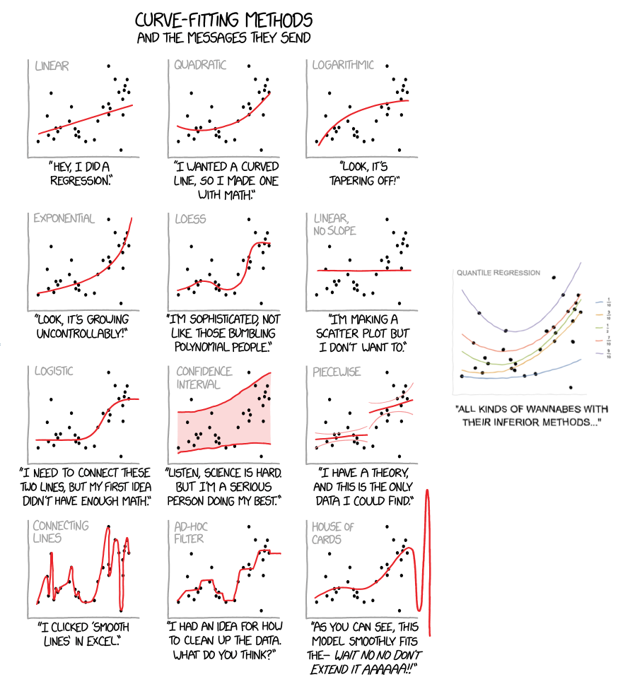

|
|
Quantile regression is a statistical technique intended to estimate,
and conduct inference about, conditional quantile functions.
Just as classical linear regression methods based on
minimizing sums of squared residuals enable one to estimate models for
conditional mean functions, quantile regression methods offer a mechanism
for estimating models for the conditional median function, and the full
range of other conditional quantile functions.
By supplementing the estimation of conditional mean functions with
techniques for estimating an entire family of conditional quantile
functions, quantile regression is capable of providing a more
complete statistical analysis of the stochastic relationships among
random variables.

Source: XKCD 2048 as amended by Anton Antonov for a 2019 talk at an R-user meeting in Boston.
Three elementary introductions to quantile regression:
Koenker, R. and K. Hallock, (2001)
Quantile Regression, Journal of Economic Perspectives, 15, 143-156.
Cade, B. and B. Noon, (2003)
A Gentle Introduction to Quantile Regression for Ecologists.
Frontiers in Ecology and the Environment, 1, 412-420.
Hao, Lingxin, and Daniel Q. Naiman, (2007)
Quantile Regression,
Sage Publications.
A more extended treatment of the subject is also available:
Koenker, R. (2005)
Quantile Regression, Econometric Society Monograph Series, Cambridge University Press.
Errata list.
A even more extended treatment of the subject is now also available:
Koenker, R., Victor Chernozhukov, Xuming He, Limin Peng (eds)
Handbook of Quantile Regression.
There are a wide variety of applications among which I've collected a few examples:
Quantile regression software is now available in most modern statistical languages.
The recommended statistical language for quantile regression applications
is R. R is a open source
software project built on foundations of the S language of John Chambers.
Capabilities for quantile regression are provided by the
"quantreg" package. Once R is installed on a networked machine
packages can be easily installed using the command
install.packages("quantreg") in an R session.
The documention for the quantreg package for R is available in pdf format
from the CRAN website. A
vignette describing the functionality of the quantreg package is also available.
Some frequently asked questions about the quantreg package are answered in the
FAQ.
Some slides on the early history of quantile regression are available
here.
Some slides for a tutorial talk about QR computation are available
here.
A development package for quantile regression methods for longitudinal data
is available from R-forge, it is called
rqpd.
Various historical versions of the R package "quantreg" are available
here.
Some of these versions are available from CRAN, the primary R repository
for packages. Some intermediate versions not available in the CRAN
archive were removed from CRAN due to uncertainties about the licensing
status of the fortran code for sparse Cholesky decomposition in cholesky.f.
They are made available here for the sake of completeness and in the interest
of reproducibility. I am pleased to report that
these licensing uncertainties have now been resolved as the authors of cholesky.f,
Esmond Ng and Barry Peyton, have declared their code to be open source, so
subsequent versions of the quantreg code > 4.77 are freely available under the
terms of the GPL license. See the README file in the package for further
details.
A basic version of the interior point (Frisch-Newton) algorithm for quantile regression
developed for the R quantreg package is also available for
matlab.
A version of the same algorithm that allows linear equality constraints is
available
here.
A C++ translation of the algorithm is also available from Ron Gallant's
libcpp library.
This algorithm is described in Koenker and Portnoy (Statistical Science, 1997).
The original simplex code for quantile regression was based on the Barrodale
and Roberts (1974) code, as described in Koenker and d'Orey (1987, 1994).
Unfortunately the fortran code for these implementations which is available
from the CRAN quantreg package is quite difficult to read and unravel, so at
some point I wrote a mimimalist version of this algorithm in pure R that I hope
will be useful to anyone seeking a more straightforward description. This version
is available here.
Quantile regression is also available in the standard distributions of Stata,
Shazam, Limdep and a number of other statistical/econometric packages.
The Xplore language includes quantile regression functions based on the
R code mentioned above.
SAS now also includes a quantreg procedure modeled closely on my R quantreg
package.
|